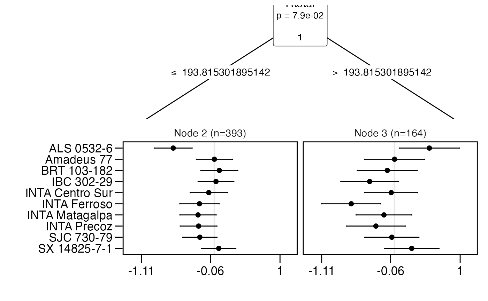
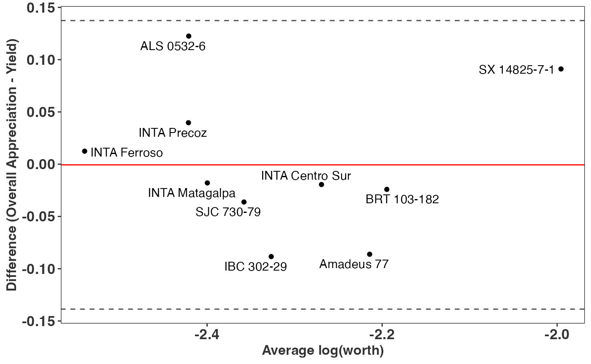

vignettes/Overview.Rmd
Overview.RmdThe gosset package provides a set of tools and methods to implement a workflow to analyse experimental agriculture data, from data synthesis to model selection and visualisation. The package is named after W.S. Gosset aka ‘Student’, a pioneer of modern statistics in small sample experimental design and analysis.
In this example we show one of the possible workflows to assess trait
prioritization and crop performance using decentralized on-farm data
generated with the tricot approach [1]. We
use the nicabean data. This dataset was generated with
decentralized on-farm trials of common bean (Phaseolus vulgaris
L.) varieties in Nicaragua over five seasons (between 2015 and 2016).
Following the tricot approach [1], farmers
were asked to test in their farms three varieties of common bean. The
varieties were randomly assigned as incomplete blocks of size three (out
of 10 varieties). The farmers assessed which of the three varieties had
the best and worst performance in eight traits (vigor, architecture,
resistance to pests, resistance to diseases, tolerance to drought,
yield, marketability, and taste). The farmers also provided their
overall appreciation about the varieties, i.e., which variety had the
best and the worst performance based on the overall performance
considering all the traits.
Here we use the Plackett-Luce model, jointly proposed by Luce (1959)
[2] and Plackett (1975) [3]. This model estimates the probability of one
variety outperforming all the others (worth) in the trait based on the
Luce’s axiom[2]. The model is implemented
in R by Turner et al. (2020) with the package
PlackettLuce [4].
The nicabean is a list with two data frames. The first,
trial, contains the trial data with farmers’ evaluations,
ranked from 1 to 3, with 1 being the higher ranked variety and 3 the
lowest ranked variety for the given trait and incomplete block. The
rankings in this dataset were previously transformed from tricot
rankings (where participants indicate best and worst) to ordinal
rankings using the function rank_tricot(). The second data
frame, covar, contains the covariates associated to the
on-farm trial plots and farmers. This example will require the packages
PlackettLuce [4], climatrends [5], chirps [6]
and ggplot2 [7].
library("gosset")
library("PlackettLuce")
library("climatrends")
library("chirps")
library("ggplot2")
data("nicabean", package = "gosset")
dat <- nicabean$trial
covar <- nicabean$covar
traits <- unique(dat$trait)
dat## id item trait rank
## <int> <chr> <chr> <int>
## 1: 2110 Amadeus 77 Vigor 2
## 2: 2110 IBC 302-29 Vigor 3
## 3: 2110 INTA Ferroso Vigor 1
## 4: 2110 Amadeus 77 Architecture 3
## 5: 2110 IBC 302-29 Architecture 2
## ---
## 15035: 3552 INTA Centro Sur Taste 3
## 15036: 3552 BRT 103-182 Taste 2
## 15037: 3552 IBC 302-29 OverallAppreciation 2
## 15038: 3552 INTA Centro Sur OverallAppreciation 3
## 15039: 3552 BRT 103-182 OverallAppreciation 1To start the analysis of the data, we transform the ordinal rankings
into Plackett-Luce rankings (a sparse matrix) using the function
rank_numeric(). We run iteratively over the traits adding
the rankings to a list called R. Since the varieties are
ranked in an ascending order, with 1 being the higher ranked and 3 the
lower ranked, we use the argument asceding = TRUE to
indicate which order should be used.
R <- vector(mode = "list", length = length(traits))
for (i in seq_along(traits)) {
dat_i <- subset(dat, dat$trait == traits[i])
R[[i]] <- rank_numeric(data = dat_i,
items = "item",
input = "rank",
id = "id",
ascending = TRUE)
}Using the function kendallTau() we can compute the
Kendall tau (\(\tau\)) coefficient
[8] to identify the correlation between
farmers’ overall appreciation and the other traits in the trial. This
approach can be used, for example, to assess the drivers of farmers
choices or to prioritize traits to be tested in a next stage of tricot
trials (e.g. a lite version of tricot with no more than 4 traits to
assess). We use the overall appreciation as the reference trait, and
compare the Kendall tau with the other 8 traits.
baseline <- which(grepl("OverallAppreciation", traits))
kendall <- lapply(R[-baseline], function(X){
kendallTau(x = X, y = R[[baseline]])
})
kendall <- do.call("rbind", kendall)
kendall$trait <- traits[-baseline]The kendall correlation shows that farmers prioritized the traits yield (\(\tau\) = 0.749), taste (\(\tau\) = 0.653) and marketability (\(\tau\) = 0.639) when assessing overall appreciation.
## trait kendallTau
## <chr> <dbl>
## 1: Vigor 0.439
## 2: Architecture 0.393
## 3: ResistanceToPests 0.463
## 4: ResistanceToDiseases 0.449
## 5: ToleranceToDrought 0.411
## 6: Yield 0.749
## 7: Marketability 0.639
## 8: Taste 0.653For each trait, we fit a Plackett-Luce model using the function
PlackettLuce() from the package of the same name. This will
allow us to continue the analysis of the trial data using the other
functions in the package gosset.
mod <- lapply(R, PlackettLuce)The worth_map() function can be used to visually assess
and compare item performance based on different characteristics. The
values represented in a worth_map are log-worth estimates. From the
breeder or product developer perspective the function
worth_map() offers a visualization tool to help in
identifying item performance based on different characteristics and
select crossing materials.
worth_map(mod[-baseline],
labels = traits[-baseline],
ref = "Amadeus 77") +
labs(x = "Variety",
y = "Trait")Trait performance (log-worth) of bean varieties in Niragua. Variety ‘Amadeus’ is set as reference (log-worth = 0). Blue values indicate a superior performance of varieties for a given trait, compared to the reference. Red values indicate a variety with weak performance for the given trait, compared to the reference.
To consider the effect of climate factors on yield, we use agro-climatic covariates to fit a Plackett-Luce tree. For simplicity, we use the total rainfall (Rtotal) derived from CHIRPS data [9], obtained in R using the R package chirps [6]. Additional covariates can be used in a Plackett-Luce tree, for example using temperature data from R package ag5Tools [10] or nasapower [11].
We request the CHIRPS data using the package chirps. Data should be returned as a matrix. This process can take some minutes to be implemented.
dates <- c(min(covar[, "planting_date"]),
max(covar[, "planting_date"]) + 70)
chirps <- get_chirps(covar[, c("longitude","latitude")],
dates = as.character(dates),
as.matrix = TRUE,
server = "ClimateSERV")We compute the rainfall indices from planting date to the first 45
days of plant growth using the function rainfall() from
package climatrends [5].
newnames <- dimnames(chirps)[[2]]
newnames <- gsub("chirps-v2.0.", "", newnames)
newnames <- gsub("[.]", "-", newnames)
dimnames(chirps)[[2]] <- newnames
rain <- rainfall(chirps, day.one = covar$planting_date, span = 45)To be linked to covariates, the rankings should be coerced to a
‘grouped_rankings’ object. For this we use the function
group() from PlackettLuce. We retain the ranking
corresponding to yield.
## 1 2 3
## "INTA Ferroso > I ..." "BRT 103-182 > IB ..." "INTA Ferroso > I ..."
## 4 5 6
## "BRT 103-182 > IB ..." "BRT 103-182 > IB ..." "BRT 103-182 > AL ..."Now we can fit the Plackett-Luce tree with climate covariates.
## Plackett-Luce tree
##
## Model formula:
## G ~ Rtotal
##
## Fitted party:
## [1] root
## | [2] Rtotal <= 193.8153: n = 393
## | ALS 0532-6 Amadeus 77 BRT 103-182 IBC 302-29 INTA Centro Sur
## | 0.0000000 0.6269536 0.7018178 0.6510282 0.5419017
## | INTA Ferroso INTA Matagalpa INTA Precoz SJC 730-79 SX 14825-7-1
## | 0.3993557 0.3775061 0.3858863 0.4045355 0.6933340
## | [3] Rtotal > 193.8153: n = 164
## | ALS 0532-6 Amadeus 77 BRT 103-182 IBC 302-29 INTA Centro Sur
## | 0.0000000 -0.5307674 -0.6414091 -0.9089877 -0.5821163
## | INTA Ferroso INTA Matagalpa INTA Precoz SJC 730-79 SX 14825-7-1
## | -1.1910556 -0.6922428 -0.8152149 -0.5724198 -0.2688304
##
## Number of inner nodes: 1
## Number of terminal nodes: 2
## Number of parameters per node: 10
## Objective function (negative log-likelihood): 977.2531The following is an example of the plot made with the function
plot() in the gosset package. The functions
node_labels(), node_rules() and
top_items() can be used to identify the splitting variables
in the tree, the rules used to split the tree and the best items in each
node, respectively.
node_labels(tree)## [1] "Rtotal"
node_rules(tree)## node rules
## 1 2 Rtotal <= 193.815301895142
## 2 3 Rtotal > 193.815301895142
top_items(tree, top = 3)## Node2 Node3
## 1 BRT 103-182 ALS 0532-6
## 2 SX 14825-7-1 SX 14825-7-1
## 3 IBC 302-29 Amadeus 77
plot(tree, ref = "Amadeus 77", ci.level = 0.9)
We can use the function reliability() to compute the
reliability of the evaluated common bean varieties in each of the
resulting nodes of the Plackett-Luce tree (Table 3). This helps in
identifying the varieties with higher probability to outperform a
variety check (Amadeus 77) [12]. For
simplicity, we present only the varieties with reliability \(\geq\) 0.5.
reliability(tree, ref = "Amadeus 77")## node item reliability reliabilitySE worth
## <int> <chr> <dbl> <dbl> <dbl>
## 2: 2 Amadeus 77 0.500 0.035 0.114
## 3: 2 BRT 103-182 0.519 0.036 0.123
## 4: 2 IBC 302-29 0.506 0.035 0.117
## 10: 2 SX 14825-7-1 0.517 0.033 0.122
## 11: 3 ALS 0532-6 0.630 0.056 0.177
## 12: 3 Amadeus 77 0.500 0.058 0.104
## 20: 3 SX 14825-7-1 0.565 0.053 0.135The result shows that three varieties can marginally outperform Amadeus 77 under drier growing conditions (Rtotal \(\leq\) 193.82 mm) whereas two varieties have a superior yield performance when under higher rainfall conditions (Rtotal \(>\) 193.82 mm) compared to the reference. This approach helps in identifying superior varieties for different target population environments. For example, the variety ALS 0532-6 shows weak performance in the whole yield ranking, however for the sub-group of higher rainfall, the variety outperforms all the others. Combining rankings with socio-economic covariates could also support the identification of superior materials for different market segments.
A better approach to assess the performance of varieties can be using
the ’Overall Appreciation”, since we expect this trait to capture the
performance of the variety not only for yield, but for all the other
traits prioritized by farmers (Table 2). To support this hypotheses, we
use the function compare() which applies the approach
proposed by Bland and Altman (1986) [13]
to assess the agreement between two different measures. We compare
overall vs yield. If both measures completely agree, all the varieties
should be centered to 0 in the axis Y.
Overall <- PlackettLuce(R[[baseline]])
Yield <- PlackettLuce(R[[yield]])
compare(Overall, Yield) +
labs(x = "Average log(worth)",
y = "Difference (Overall Appreciation - Yield)")
The chart shows no complete agreement between overall appreciation and yield. For example, variety SX 14825-7-1 shows superior performance for overall appreciation when compared with yield. Looking at the log-worth in the heat map of Figure 1, we can argue that the superior performance of the given variety is also related to taste, marketability and diseases resistance. This performance, however, was not captured when assessing only yield.
Here we presented a simple workflow to assess crop variety
performance and trait prioritization in decentralized on-farm trials
with the tricot approach. A more complex workflow will also utilize
other functions available in gosset, for example, a forward selection
combined with crossvalidation() to improve model
robustness, or model selection with btpermute() to consider
all possible permutations in Bradley-Terry models, or a risk analysis
using regret() to support the selection of varieties, or
using rank_numeric() to combine legacy data and deal with
heterogeneous data from different trials. All of these were previously
implemented and validated elsewhere [14–18].